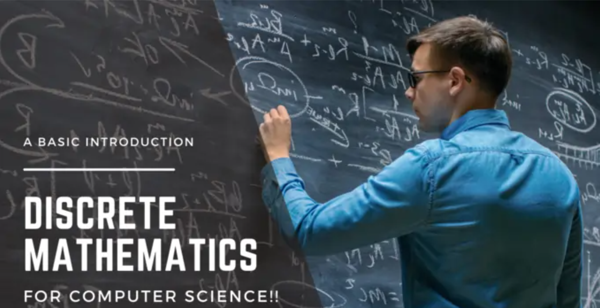
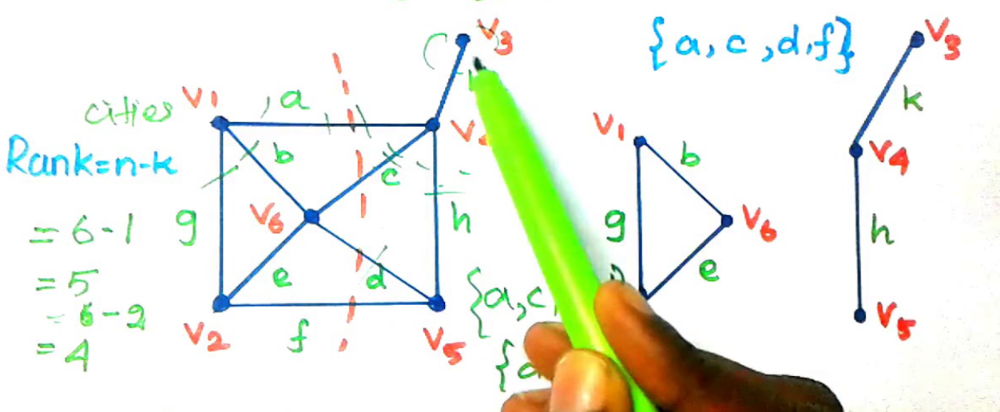

Discrete Mathematics directly relates to Computer Science and Information Technology
Introduction to Discrete Mathematics by Ron McFarland, Ph.D.
One of the foundational courses for any Computer Science or Information Technology student
is Discrete Math. Each aspect of Discrete Math is represented in some facet of CS/IT. For example,
the Computer Science/Information Technology learner will explore different programming languages.
Each language will have some aspect of number theory, algorithms, and data structures embedded in the
context of the language. Databases will also apply set theory, number theory, Boolean algebra, and other aspects
in the context of databases. Likewise, Networks will also apply items, including graph theory,
combinatorics, Boolean algebra, etc., into networking design and protocols.
Given all the mathematics courses available to the CS/IT learner, Discrete
Mathematics may be the cornerstone that provides the foundation to understand the essential technology that Computer
Scientists and Information Technologists use daily.
What is Discrete Math?
Discrete mathematics is a branch of mathematics that deals with discrete or
distinct objects rather than continuous objects. Discrete mathematics is
concerned with the study of structures and algorithms used to represent and manipulate discrete objects.
It has many applications in computer science and other fields. There are several focus areas within
Discrete Mathematics, which include the following items:
· Graph Theory:
One of the main areas of study in discrete mathematics is graph theory, which studies graphs and their properties. A graph is a collection of vertices (also called nodes) and edges that connect them. Graph theory is used to model and analyze networks, such as social networks, transportation networks, and communication networks.
· Set Theory:
Another important area of study in discrete mathematics is set theory, which studies sets and their properties. A set is a collection of distinct objects, and set theory is used to study the properties of sets, such as unions, intersections, and complements. Set theory is also used to define mathematical concepts, such as functions and relations.
· Number theory:
Number theory studies the properties of integers, another important area of study in discrete mathematics. Number theory is used to study prime numbers, divisibility, and modular arithmetic.
· Boolean Algebra:
Boolean algebra studies logical operations, such as AND, OR, and NOT, and their application in computer circuits. Boolean algebra is used to design and analyze digital circuits and is an important foundation for studying computer science.
· Algorithms:
Algorithms are another important area of study in discrete mathematics and are methods for solving problems. Algorithms can be used for tasks such as sorting, searching, and optimization, and they are an important tool for computer scientists.
Discrete mathematics is a fascinating and important field of study with many applications in computer science and other fields. It is a broad field that encompasses many different areas of study, and it is an important foundation for the study of computer science.
What is Cutset?

In graph theory, a cut-set is a group of edges that, when removed, splits the graph into two disconnected parts.
How is Discrete Math related to Computer Science and Information Technology?
In computer science, discrete mathematics is used to study the complexity of algorithms, which are methods for solving problems. Algorithms are a fundamental concept in computer science and perform tasks such as sorting, searching, and optimization. Discrete mathematics is used to study the complexity of algorithms, which measures how long an algorithm takes to run as a function of the input size. This is important because algorithms with good complexity are more efficient and can run faster on larger inputs.
Discrete mathematics is also used in designing and analyzing digital circuits, which are used to build computers and other electronic devices. Digital circuits are built using logic gates, which perform logical operations such as AND, OR, and NOT. Discrete mathematics is used to design and analyze digital circuits, and it is an important foundation for the study of computer engineering.
Discrete mathematics is a valuable tool for researchers and professionals in computer science, information technology, and related fields. It is an important foundation for studying these fields.
Discrete mathematics is also used in designing and analyzing digital circuits, which are used to build computers and other electronic devices. Digital circuits are built using logic gates, which perform logical operations such as AND, OR, and NOT. Discrete mathematics is used to design and analyze digital circuits, and it is an important foundation for the study of computer engineering.
Discrete mathematics is a valuable tool for researchers and professionals in computer science, information technology, and related fields. It is an important foundation for studying these fields.
Summary
In summary, discrete mathematics is an important field of study in information technology and computer science because it provides the mathematical foundations for many concepts and techniques used in computer science and other areas of information technology.